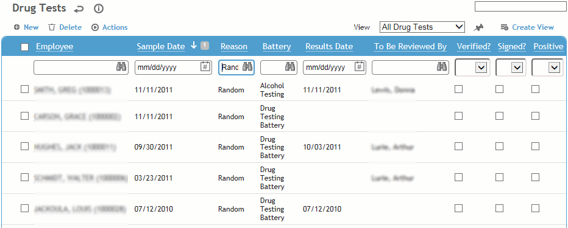
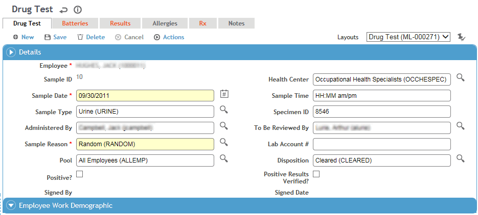
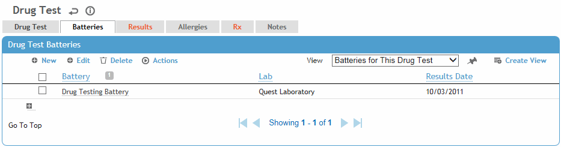
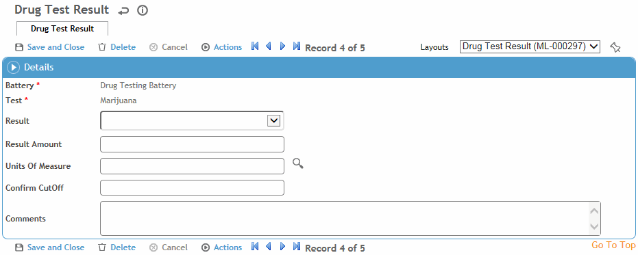
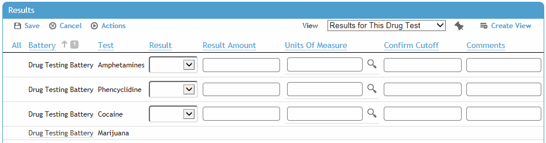

In the Occupational Health menu, click Drug Testing and use the provided fields to generate a list of drug tests for employees.

Select a sample, or click New to enter details about a new sample.

On the Drug Test tab, enter:
date and time the sample was taken
type of sample and specimen ID
the person who is administering the test and the person who will be reviewing it.
Only the user identified as the reviewer can sign the record (choose Actions»Sign). A signed record is locked from further edits.
the reason for the sample
account number of the lab where the sample was taken
whether the result was positive and verified
pool ID and name
The Batteries tab shows any batteries added from the Drug Draws process (see Drawing a Sample). To add a battery, click New, select the battery and laboratory, then click Save. The tests for each battery are listed on the Results tab.

To view or enter the results of a lab analysis, on the Results tab click the name of the test to open the test result details form.

Enter the test results received from the lab:
whether the test Result was positive, negative, or cancelled
enter the Result Amount or select from a list of responses that correspond to the Test Type in the ClinicalTestUnit look-up table. Depending on the test, results may be numeric or descriptive; for example, for a urine test results may be described by appearance (clear, cloudy, hazy, etc.) and/or by color (red, amber, yellow, etc.).
the Units Of Measurement in which the lab result is reported (e.g. mg/dl)
in the Confirm Cutoff field, the maximum number of units allowed for the test result to be classified as negative.
click Save.
If there are multiple tests to enter results for, select the tests you want to enter results for and then click Edit to quickly enter all of the results on the same screen, instead of opening each test separately.

Use the Documents tab to link an external file to the record to provide easy access to the file (for more information, see Linking or Importing a Document).
The Letters tab allows you to view past letters or generate new letters to employees. Form letters are stored in the LettersTemplate look-up table. For information about creating letters, see Generating a Letter. When you generate a letter, the Employee Letter Generated checkbox on the Drug Test tab is selected automatically.
Instead of opening individual records to print employee letters, you can use the Drug Testing Employee Letters report to generate letters for multiple employees at the same time; if you save the letters when prompted, the Employee Letter Generated checkbox for each record is automatically selected so that the letter will only be sent once.